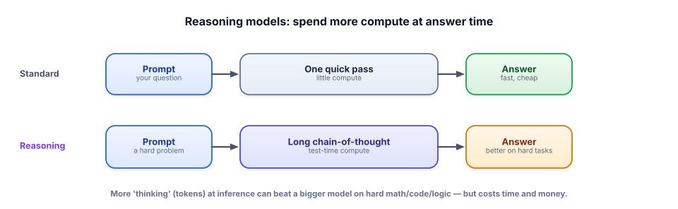

Reasoning models & test-time compute
A major shift in the field: instead of only making models bigger, we now let them think longer at answer time. Understanding “reasoning models” and “test-time compute” keeps you current and helps you choose the right model for a job.
Two ways to make a model smarter
For years, the recipe for a more capable model was “train a bigger one on more data.” That still works, but there’s a second lever that reshaped the field: spend more compute when answering, not just when training. A reasoning model (sometimes called “o1-style,” after an early prominent one) is trained to produce a long internal chain-of-thought — working through a problem step by step, checking itself, exploring approaches — before it commits to a final answer. That extra deliberation at inference is called test-time compute: the model literally uses more tokens and time to think, and on hard problems that buys markedly better accuracy.
You already met the seed of this in Track 2: chain-of-thought prompting (“think step by step”) improves reasoning. Reasoning models bake that in and take it much further, having been trained specifically to reason at length and self-correct. The result is a model that’s dramatically stronger on math, coding, logic, and multi-step planning — the tasks where a single quick pass tends to slip.

When to reach for one (and when not)
Reasoning models aren’t a free upgrade — they’re a trade. Because they generate a long internal reasoning process, they’re slower and more expensive per answer (you pay for all those thinking tokens). So the choice is task-driven. For hard, multi-step problems — complex math, tricky debugging, planning, careful analysis — the accuracy gain is well worth the cost. For simple, high-volume tasks — classification, extraction, straightforward Q&A, formatting — a standard (often smaller) model is faster, cheaper, and just as good; paying a reasoning model to “think hard” about a trivial task is waste. This is a natural extension of model routing from Track 8: send the genuinely hard requests to a reasoning model and everything else to a cheaper one.
Specific model names, prices, and benchmarks change monthly, so don’t memorize them — memorize the principle: capability can come from more training or more inference-time thinking, and thinking longer trades cost/latency for accuracy on hard problems. That framing stays true no matter which model is on top this quarter. Always check current options before choosing.
Buy accuracy with compute
Increase the number of reasoning passes. Accuracy rises, then flattens, while cost and latency keep climbing in a straight line.
- Capability comes from two levers: bigger training and more test-time compute (thinking longer at answer time).
- Reasoning models generate a long internal chain-of-thought and self-correct before answering — much stronger on math/code/logic.
- It’s the trained-in, supercharged version of Track 2’s chain-of-thought prompting.
- They’re slower and pricier — use them for genuinely hard problems; use standard/smaller models for simple, high-volume tasks.
- This is model routing (Track 8) by difficulty: hard → reasoning model, easy → cheap model.
Your product has two features: (a) categorize incoming support emails into 8 buckets, at high volume; (b) a “solve this multi-step engineering calculation” assistant used occasionally. Which should use a reasoning model, which shouldn’t, and how would you architect the choice?
▸ Show solution & reasoning
(a) Categorization → standard/small model. It’s a simple, high-volume classification task; a small fast model at temperature 0 nails it cheaply. A reasoning model here would multiply cost and latency for no accuracy benefit — you’d be paying it to deliberate over “is this billing or shipping,” which needs no deliberation.
(b) Multi-step calculation → reasoning model. This is exactly where test-time compute pays off: the problem has several dependent steps where a quick pass often slips, and the volume is low, so the higher per-call cost is affordable and the accuracy gain matters.
Architecture: route by task. The system knows which feature is calling, so it selects the model accordingly — cheap model for categorization, reasoning model for the calculator — rather than using one model for everything. That’s model routing (Track 8) applied to the reasoning/standard split, and it optimizes cost and latency without sacrificing quality where quality matters. You’d confirm the choice with evals: measure accuracy and cost per feature, and only pay for reasoning where it actually moves the number.
What is “test-time compute,” and why does it matter?
The rise of test-time compute has a few consequences worth carrying into interviews and design discussions. First, it adds a genuinely new dimension to the cost/latency thinking from Track 8: “which model” is no longer just big-vs-small, it’s also how-hard-should-it-think, and both are routing decisions driven by task difficulty and your quality bar. A mature system might triage a request — cheap model first, escalate to a reasoning model only if the task looks hard or the first answer fails a check — spending expensive thinking exactly where it earns its keep. That triage is an architecture choice you can design, not a property of any single model.
Second, it reframes some problems you’d otherwise solve with elaborate agent scaffolding. A lot of early agent work manually orchestrated “think, then act, then reflect” loops (Track 4, Track 12) partly to squeeze more reasoning out of models that answered too quickly. As models internalize deep reasoning, some of that scaffolding gets simpler — the model does more of the careful thinking itself. But not all of it: agents still need tools, memory, and bounded loops, and reasoning models still hallucinate, still can’t know private facts, and still need grounding and evaluation. The durable lesson is that the field advances by giving models new ways to spend compute — more parameters, more data, more inference-time thinking, more tools — and your job is to compose those capabilities into reliable systems. Knowing that reasoning is now a dial you can turn, at a price, is what lets you make that call deliberately instead of defaulting to the most expensive model for everything.
Reasoning is one frontier shift; there are several worth a working engineer’s awareness. Next: the modern frontier.